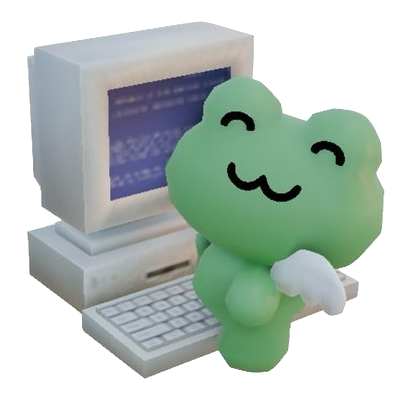
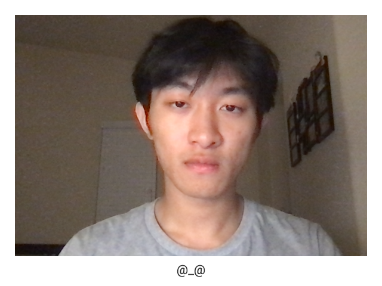
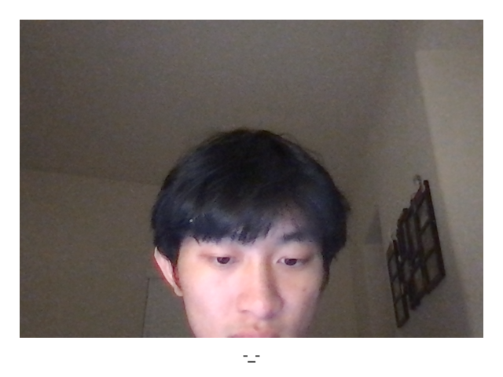
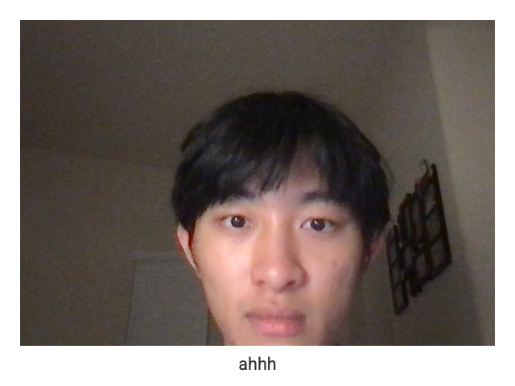

I mostly use the internet for entertainment and academic purposes. Although, in my day-to-day life, entertainment probably takes up more of my time, as it encompasses various activities (video games, social media, music, etc.). Leisure is significantly easier to become engrossed in compared to working or studying, and it is also frequently accessible (i.e., scrolling through your phone when eating or during transport).
Growing up, I was not allowed to be online often because my mom wanted to "protect my eyesight." This was her sole reason, and she would go so far as to confiscate/hide devices. I have always been a quiet, atypical kid, and online virtual worlds appeared as safe social spaces where I could wander more comfortably than in reality. It was, therefore, no surprise that I was obsessed with the internet. If it weren't for my mom's restrictions, I would probably be glued to my computer 24/7. Ironic since, now that I am an emancipated adult, I am borderline chronically online. The internet has essentially become the outlet for modern... everything.
Estimate: Roughly 60% of Gen Z spend four or more hours a day on social platforms alone, while 23% spend seven or more hours.
I use Google Chrome exclusively for school-related activities. Since GlanceBack is a Chrome extension, every photo was captured of me either working on an assignment or in a class. I wrote emoticons and short expressions because I did not think to jot down a memo of what exactly I was doing during the moment.
  Aside from being very sleep-deprived, many of my photos suggest the sluggish/aimless opening and closing of tabs as I navigated through numerous pages across 50 other opened tabs. I think my deadpan expressions are due to the monotony of working and how accustomed we are to computer interfaces, which leaves us passive to the things we are doing and the things happening on our screens. This was probably why I left emoticons, not out of intention, but on a whim. I was at the point of exhaustion using the internet, and I just wanted to break free, though that probably means procrastinating — still, on the internet.
photo 1: tired
photo 2: unconsciously opening new tab
photo 3: totally saw it coming >:(
From the reading the handmade web and website is a shifting house next to a river of knowledge. what could yours be?, the authors preach how great "self-made" or "handmade" websites are compared to websites created by "someone else." In this context, the other person is a corporation or business that attempts to generate a profit by selling a service platform to the public. The type of platform referred to here is social media, which has become increasingly advertising-heavy and is designed through its algorithm to keep users trapped. Their greatest sin is how they are standardizing what the internet is supposed to be.
Thus, "handmade" spaces on the internet are crucial because they are the sole means for individual users to reclaim control and reassert the potential creativity and possibilities that the internet offers. My hopes for the future of the internet and online communities are that we collectively decide to stand up, or at least move away from, big online-dominating corporations. My hope is that we continue to create fond memories online and not be complacent with the unhealthy aspects we are dissatisfied with. My hope is that people are more willing to present their authentic selves online rather than a persona.
My hope is that we shape the internet and its platforms, not the other way around.
Sometimes being online feels like a fever dream. When I am online, my mind wanders more, and I get to see many things and meet various people with unique interests that I wouldn't likely encounter in reality. This is probably because people feel more inclined to present their best versions online, or, conversely, they are more open under the guise of anonymity. When I am online, I get a sense of seemingly infinite freedom to explore, but that also means I am more prone to being caught off guard or too detached from reality.
The difference between online life and real life is similar to that between non-fiction and fiction. One of them is a fantasy based on reality, and thus can feel real, but we have to bring our minds back into our physical world eventually. Online life can be tricky because we do not perceive restrictions, but they are there, and they are often not what we think they are.
now that you've reached the end, how about touching some grass?